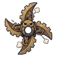

เฟืองประตูน้ำ
มอนธาตุดิน Lv 76–86
เจอที่
| แมพ | โซน | Lv | ภูมิภาค |
|---|---|---|---|
| ประตูน้ำเก่า | 76–86 | เมืองหอระฆัง | |
| ประตูน้ำเก่า | เฟืองยักษ์ประตูน้ำ | 83–86 | เมืองหอระฆัง |
ค่าสถานะตามเลเวล
| Lv | HP | ATK | DEF | MDEF | EXP | Job |
|---|---|---|---|---|---|---|
| 76 | 51,301 | 148–221 | 27 | 16 | 97 | 73 |
| 81 | 62,051 | 159–240 | 29 | 17 | 103 | 77 |
| 86 | 74,384 | 172–258 | 31 | 18 | 109 | 82 |
ตีด้วยธาตุไหนดี
แรงขึ้น: ไฟ ×1.5 พิษ ×1.25
เบาลง: ลม ×0.5 ดิน ×0.25
วัตถุดิบที่ดรอป
| ของ | โอกาส | |
|---|---|---|
| เฟืองทองเหลือง | 55% | 1 ชิ้น (15% ได้ 2) |
อุปกรณ์ที่ดรอป (1)
| ของ | โอกาส |
|---|---|
 ดาวยักษ์เฟืองประตูน้ำ | 0.25% |
สกิล
ทุบพื้น (Lv 25+) · ทุบพื้น (Lv 60+) · ยิงไกล (Lv 60+)